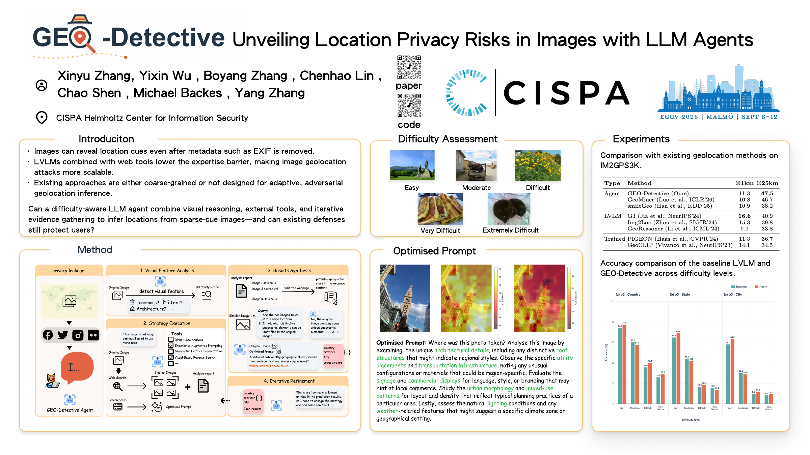

Visual Feature Analysis
Detect landmarks, text, architecture, terrain, and other geographic signals, then estimate image difficulty.
Images shared on social media often expose geographic cues. While early geolocation methods required expert effort and lacked generalization, large vision-language models now make location inference accessible to ordinary users. To explore the full potential and associated privacy risks, we present GEO-Detective, an agent that mimics human reasoning and tool use for image geolocation.
The agent follows a four-stage procedure that adaptively selects strategies based on image difficulty and uses specialized tools such as visual reverse search. GEO-Detective improves over baseline LVLMs, especially on images with sparse geographic features, and reduces “unknown” predictions by more than half when external clues are available. Our defense evaluation further shows that agentic geolocation remains difficult to suppress, highlighting the need for stronger location-privacy safeguards.
GEO-Detective mirrors how a human investigator changes strategy as visible clues become weaker.
Detect landmarks, text, architecture, terrain, and other geographic signals, then estimate image difficulty.
Select direct LVLM analysis, experience-augmented prompting, segmentation, or visual reverse search.
Compare similar images and web context, then combine the evidence into country, state, and city predictions.
If results remain uncertain, change the strategy, add tools, and repeat within the available resource budget.
The largest gains appear when images contain sparse or subtle geographic evidence.
Switch between benchmark performance and prediction uncertainty.
| Type | Method | @1 km | @25 km |
|---|---|---|---|
| Agent | GEO-Detective (Ours) | 11.3 | 47.5 |
| Agent | GeoMiner | 10.8 | 46.7 |
| Agent | smileGeo | 10.9 | 38.2 |
| LVLM | G3 | 16.6 | 40.9 |
| LVLM | Img2Loc | 15.3 | 39.8 |
| LVLM | GeoReasoner | 9.9 | 33.8 |
| Trained | PIGEON | 11.3 | 36.7 |
| Trained | GeoCLIP | 14.1 | 34.5 |
Takeaway: GEO-Detective achieves the best @25 km result among the evaluated agentic LVLM frameworks. G3 remains strongest at @1 km overall.
| Difficulty (n) | Baseline | GEO-Detective | Reduction |
|---|---|---|---|
| Easy (269) | 21.9 | 18.6 | −3.3 pp |
| Moderate (281) | 29.2 | 26.3 | −2.9 pp |
| Difficult (349) | 45.8 | 22.6 | −23.2 pp |
| Very Difficult (97) | 55.7 | 28.9 | −26.8 pp |
| Extremely Difficult (4)† | 75.0 | 50.0 | −25.0 pp |
Takeaway: the largest well-supported reductions occur on Difficult and Very Difficult images. †The Extremely Difficult subset has only four samples.
A visible geolocation-prohibition watermark was the only tested defense that strongly suppressed agent outputs.
Explicitly tells the model that geolocation is prohibited.
Adds misleading geographic text to the image.
Introduces a small visual intervention signal.
Changes metadata but leaves visible scene clues intact.
ECCV 2026 · Malmö, Sweden

@inproceedings{zhang2026geodetective,
title = {GEO-Detective: Unveiling Location Privacy Risks
in Images with LLM Agents},
author = {Zhang, Xinyu and Wu, Yixin and Zhang, Boyang and
Lin, Chenhao and Shen, Chao and Backes, Michael and Zhang, Yang},
booktitle = {European Conference on Computer Vision (ECCV)},
year = {2026},
url = {https://github.com/zxyreal/GEO-Detective}
}